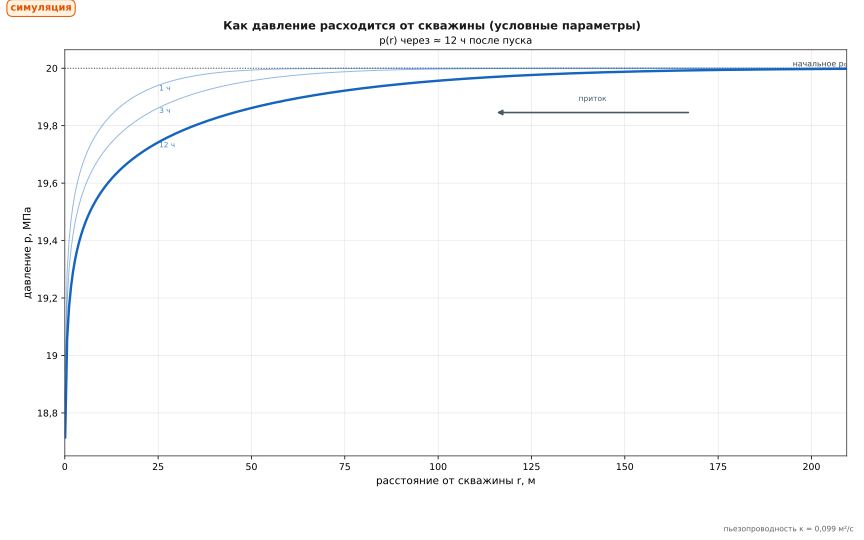

Стр. 480 · §4. Вывод дифференциального уравнения фильтрации упругой жидкости в упругой пористой среде по закону Дарси
Подставив (23.13) и (23.15) в исходное дифференциальное уравнение (23.12), получим дифференциальное уравнение относительно давления
Неустановившееся движение упругой жидкости в упругом пласте. Метод ПСССШаг 13 из 60
В книге: «Вывод дифференциального уравнения фильтрации упругой жидкости в упругой пористой среде по закону Дарси» стр. 480–481
Опирается на: шаг 11 «Как упростить накопление массы» (предпосылка), шаг 12 «Как упрощают перенос жидкости» (предпосылка), шаг 3 «Что замедляет перераспределение давления» (предпосылка), шаг 1 «Почему пласт отвечает скважине» (опровергает заблуждение)
Упрощённые части баланса дают уравнение пьезопроводности — главное уравнение упругого режима.
Коэффициент пьезопроводности κ показывает, как быстро перераспределяется давление; на практике чаще всего от 0,1 до 5 м²/с.
Уравнение линейно только при слабой сжимаемости.
Пороговая идея. Пьезопроводность — коэффициент перераспределения давления, а не постоянная скорость границы. модель
Определите, где наблюдение, вывод или допущение. Раскройте утверждение, чтобы свериться с ответом и цитатой.
Вывод · стр. 480
«Подставив (23.13) и (23.15) в исходное дифференциальное уравнение (23.12), получим дифференциальное уравнение относительно давления»
Наблюдение · стр. 480
«Уравнение (23.16) – основное дифференциальное уравнение теории упругого режима фильтрации. По предложению В.Н.Щелкачева, оно названо уравнением пьезопроводности.»
Наблюдение · стр. 480
«Дифференциальное уравнение пьезопроводности относится к уравнениям типа уравнения теплопроводности (уравнения Фурье), которое является одним из основных уравнений математической физики.»
Наблюдение · стр. 480
«Коэффициент $\kappa$, характеризующий скорость перераспределения пластового давления»
Наблюдение · стр. 481
«Наиболее часто встречающиеся в нефтепромысловой практике значения коэффициента пьезопроводности заключены в пределах от 0,1 до 5 м²/с.»
Вывод · стр. 481
«Размерность коэффициента пьезопроводности $\kappa$ можно установить из (23.18):»
Допущение · стр. 481
«Отметим, что уравнение пьезопроводности (23.16) применимо только для слабосжимаемой упругой жидкости, для которой $\beta_*(p - p_0) << 1$.»
Вывод · стр. 481
«Если же это условие не выполняется, то при переходе от (23.14) к (23.15) нельзя пренебрегать слагаемым с $\beta_*$.»
Вывод · стр. 481
«Данное обстоятельство приведет к тому, что дифференциальное уравнение значительно усложнится и станет нелинейным.»
Обе упрощённые части подставляют в исходный баланс массы. Получается дифференциальное уравнение для давления. стр. 480
«Подставив (23.13) и (23.15) в исходное дифференциальное уравнение (23.12), получим дифференциальное уравнение относительно давления»
По предложению Щелкачева его назвали уравнением пьезопроводности. стр. 480
«Уравнение (23.16) – основное дифференциальное уравнение теории упругого режима фильтрации. По предложению В.Н.Щелкачева, оно названо уравнением пьезопроводности.»
Это уравнение того же типа, что теплопроводности уравнение Фурье. Темп изменения давления связан с его пространственной кривизной. стр. 480
«Дифференциальное уравнение пьезопроводности относится к уравнениям типа уравнения теплопроводности (уравнения Фурье), которое является одним из основных уравнений математической физики.»

Коэффициент пьезопроводности κ характеризует скорость перераспределения пластового давления. Название дано по аналогии с температуропроводностью. стр. 480
«Коэффициент $\kappa$, характеризующий скорость перераспределения пластового давления»
Его находят как проницаемость, делённую на вязкость и упругоёмкость. Отсюда размерность: квадрат длины, делённый на время. стр. 481
«Размерность коэффициента пьезопроводности $\kappa$ можно установить из (23.18):»
В нефтепромысловой практике чаще всего встречается пьезопроводность от 0,1 до 5 м²/с. стр. 481
«Наиболее часто встречающиеся в нефтепромысловой практике значения коэффициента пьезопроводности заключены в пределах от 0,1 до 5 м²/с.»
Это не скорость фронта давления. Размерность площади в единицу времени говорит о диффузии, а не о волне. стр. 480–481
Уравнение применимо только для слабосжимаемой упругой жидкости. Автор задаёт условие: β*(p − p0) много меньше единицы. стр. 481
«Отметим, что уравнение пьезопроводности (23.16) применимо только для слабосжимаемой упругой жидкости, для которой $\beta_*(p - p_0) << 1$.»
Если условие нарушено, поправку в пространственном члене отбрасывать нельзя. стр. 481
«Если же это условие не выполняется, то при переходе от (23.14) к (23.15) нельзя пренебрегать слагаемым с $\beta_*$.»
Сохранённая поправка сильно усложняет уравнение и делает его нелинейным. стр. 481
«Данное обстоятельство приведет к тому, что дифференциальное уравнение значительно усложнится и станет нелинейным.»
Как пользоваться уравнением
Основное дифференциальное уравнение упругой фильтрации. стр. 480
| Обозначение | Что это | Единицы |
|---|---|---|
| $\beta^*$ | упругоемкость пласта | Па⁻¹ |
| $p$ | пластовое давление | Па |
| $t$ | время | с |
| $k$ | проницаемость пласта | м² |
| $\mu$ | динамическая вязкость | Па·с |
Уравнение пьезопроводности в декартовых координатах. стр. 480
| Обозначение | Что это | Единицы |
|---|---|---|
| $p$ | пластовое давление | Па |
| $t$ | время | с |
| $\kappa$ | коэффициент пьезопроводности | м²/с |
| $x$ | первая пространственная координата | м |
| $y$ | вторая пространственная координата | м |
| $z$ | третья пространственная координата | м |
Определение коэффициента пьезопроводности. стр. 480
| Обозначение | Что это | Единицы |
|---|---|---|
| $\kappa$ | коэффициент пьезопроводности | м²/с |
| $k$ | проницаемость пласта | м² |
| $\mu$ | динамическая вязкость | Па·с |
| $\beta^*$ | упругоемкость пласта | Па⁻¹ |
Размерность пьезопроводности: квадрат длины, деленный на время. В числителе размерность проницаемости из определения. стр. 481
| Обозначение | Что это | Единицы |
|---|---|---|
| $\kappa$ | коэффициент пьезопроводности | м²/с |
| $k$ | проницаемость пласта | м² |
| $\mu$ | динамическая вязкость | Па·с |
| $\beta^*$ | упругоемкость пласта | Па⁻¹ |
| $L$ | размерность длины | м |
| $T$ | размерность времени | с |
Условие слабой сжимаемости, обозначение звездочки оставлено как в тексте. стр. 481
| Обозначение | Что это | Единицы |
|---|---|---|
| $\beta^*$ | упругоемкость пласта | Па⁻¹ |
| $p$ | пластовое давление | Па |
| $p_0$ | начальное давление | Па |
Ошибка: Давление расходится с постоянной скоростью, как звук.
На самом деле: Уравнение относится к типу теплопроводности, а коэффициент имеет размерность площади в единицу времени. стр. 480–481
Коэффициент управляет пространственно-временным откликом давления.
Похоже на диффузию тепла в радиаторе: разность давления сглаживается, как различия температуры.
Где аналогия перестаёт работать: Коэффициент не является скоростью сетевого пакета или звуковой волны.
В условии малости автор пишет обозначение β со звездочкой в индексе; в выражении, из которого он отбрасывает поправку, явно стоит коэффициент объемного сжатия жидкости. Не переноси обозначения между формулами без проверки.
м²/с
Верный ответ: 5 м²/с
Автор пишет, что чаще всего встречается пьезопроводность от 0,1 до 5 м²/с. Где это в тексте (стр. 481) →
Верный ответ: Поправку отбрасывать нельзя, уравнение станет нелинейным
При нарушении условия поправку сохраняют, и уравнение становится нелинейным. Где это в тексте (стр. 481) →
Верный ответ: К тому же типу, что уравнение теплопроводности Фурье
Автор указывает, что уравнение того же типа, что уравнение теплопроводности. Где это в тексте (стр. 480) →
Все утверждения шага с дословной цитатой автора и страницей книги (по PDF).
Подстановка обеих упрощенных частей в исходный баланс дает дифференциальное уравнение для давления. вывод
«Подставив (23.13) и (23.15) в исходное дифференциальное уравнение (23.12), получим дифференциальное уравнение относительно давления»
Уравнение названо уравнением пьезопроводности по предложению Щелкачева. наблюдение
«Уравнение (23.16) – основное дифференциальное уравнение теории упругого режима фильтрации. По предложению В.Н.Щелкачева, оно названо уравнением пьезопроводности.»
Уравнение пьезопроводности относится к тому же типу, что уравнение теплопроводности Фурье. наблюдение
«Дифференциальное уравнение пьезопроводности относится к уравнениям типа уравнения теплопроводности (уравнения Фурье), которое является одним из основных уравнений математической физики.»
Коэффициент пьезопроводности характеризует скорость перераспределения пластового давления; название дано по аналогии с температуропроводностью. наблюдение
«Коэффициент $\kappa$, характеризующий скорость перераспределения пластового давления»
Чаще всего в нефтепромысловой практике встречается пьезопроводность от 0,1 до 5 м²/с. наблюдение
«Наиболее часто встречающиеся в нефтепромысловой практике значения коэффициента пьезопроводности заключены в пределах от 0,1 до 5 м²/с.»
Размерность пьезопроводности устанавливают по отношению проницаемости к произведению вязкости и упругоемкости. вывод
«Размерность коэффициента пьезопроводности $\kappa$ можно установить из (23.18):»
Уравнение применимо только для слабосжимаемой упругой жидкости при указанном автором условии $\beta_*(p - p_0) << 1$. допущение
«Отметим, что уравнение пьезопроводности (23.16) применимо только для слабосжимаемой упругой жидкости, для которой $\beta_*(p - p_0) << 1$.»
Если условие малости нарушено, поправку при переходе к упрощенной пространственной части отбрасывать нельзя. вывод
«Если же это условие не выполняется, то при переходе от (23.14) к (23.15) нельзя пренебрегать слагаемым с $\beta_*$.»
Если сохранить поправку, дифференциальное уравнение существенно усложнится и будет нелинейным. вывод
«Данное обстоятельство приведет к тому, что дифференциальное уравнение значительно усложнится и станет нелинейным.»
Стр. 480 · §4. Вывод дифференциального уравнения фильтрации упругой жидкости в упругой пористой среде по закону Дарси
Подставив (23.13) и (23.15) в исходное дифференциальное уравнение (23.12), получим дифференциальное уравнение относительно давления
Стр. 480 · §4. Вывод дифференциального уравнения фильтрации упругой жидкости в упругой пористой среде по закону Дарси
$$\beta^* \frac{\partial p}{\partial t} = \frac{k}{\mu} \Delta p, \quad (23.16)$$
Стр. 480 · §4. Вывод дифференциального уравнения фильтрации упругой жидкости в упругой пористой среде по закону Дарси
или в декартовой системе координат
Стр. 480 · §4. Вывод дифференциального уравнения фильтрации упругой жидкости в упругой пористой среде по закону Дарси
$$\frac{\partial p}{\partial t} = \kappa \left( \frac{\partial^2 p}{\partial x^2} + \frac{\partial^2 p}{\partial y^2} + \frac{\partial^2 p}{\partial z^2} \right), \quad (23.17)$$
Стр. 480 · §4. Вывод дифференциального уравнения фильтрации упругой жидкости в упругой пористой среде по закону Дарси
где введено обозначение
Стр. 480 · §4. Вывод дифференциального уравнения фильтрации упругой жидкости в упругой пористой среде по закону Дарси
$$\kappa = k / (\mu \beta^*). \quad (23.18)$$
Стр. 480 · §4. Вывод дифференциального уравнения фильтрации упругой жидкости в упругой пористой среде по закону Дарси
Уравнение (23.16) – основное дифференциальное уравнение теории упругого режима фильтрации. По предложению В.Н.Щелкачева, оно названо уравнением пьезопроводности. Дифференциальное уравнение пьезопроводности относится к уравнениям типа уравнения теплопроводности (уравнения Фурье), которое является одним из основных уравнений математической физики.
Стр. 480 · §4. Вывод дифференциального уравнения фильтрации упругой жидкости в упругой пористой среде по закону Дарси
Коэффициент $\kappa$, характеризующий скорость перераспределения пластового давления при неустановившейся фильтрации упругой жидкости в упругой пористой среде, В.Н.Щелкачев назвал коэффициентом пьезопроводности пласта по аналогии с коэффициентом температуропроводности в уравнении теплопроводности.
Стр. 481 · §4. Вывод дифференциального уравнения фильтрации упругой жидкости в упругой пористой среде по закону Дарси
Размерность коэффициента пьезопроводности $\kappa$ можно установить из (23.18):
Стр. 481 · §4. Вывод дифференциального уравнения фильтрации упругой жидкости в упругой пористой среде по закону Дарси
$$[\kappa] = \frac{h}{[\mu][\beta^*]} = \frac{L^2}{L^{-1}MT^{-1}LM^{-1}T^2} = \frac{L^2}{T},$$
Стр. 481 · §4. Вывод дифференциального уравнения фильтрации упругой жидкости в упругой пористой среде по закону Дарси
где $L$, $M$, $T$ – соответственно, размерности длины, массы и времени. Наиболее часто встречающиеся в нефтепромысловой практике значения коэффициента пьезопроводности заключены в пределах от 0,1 до 5 м²/с.
Стр. 481 · §4. Вывод дифференциального уравнения фильтрации упругой жидкости в упругой пористой среде по закону Дарси
Отметим, что уравнение пьезопроводности (23.16) применимо только для слабосжимаемой упругой жидкости, для которой $\beta_*(p - p_0) << 1$. Если же это условие не выполняется, то при переходе от (23.14) к (23.15) нельзя пренебрегать слагаемым с $\beta_*$. Данное обстоятельство приведет к тому, что дифференциальное уравнение значительно усложнится и станет нелинейным.
На этот шаг опираются: шаг 14 «Переход к одномерным потокам», шаг 15 «Что задано у галереи», шаг 17 «Один аргумент вместо трёх», шаг 25 «Уравнение для скорости фильтрации», шаг 40 «Два масштаба безразмерного времени», шаг 44 «Зачем нужны приближённые методы», шаг 45 «Нестационарный процесс как серия стационарных», шаг 49 «Фронт давления растёт как корень», шаг 52 «Длина зоны при постоянной депрессии», шаг 56 «Как растёт радиус возмущения».
Как работает уравнение пьезопроводности
Ссылки в ответе ведут к исходному тексту.